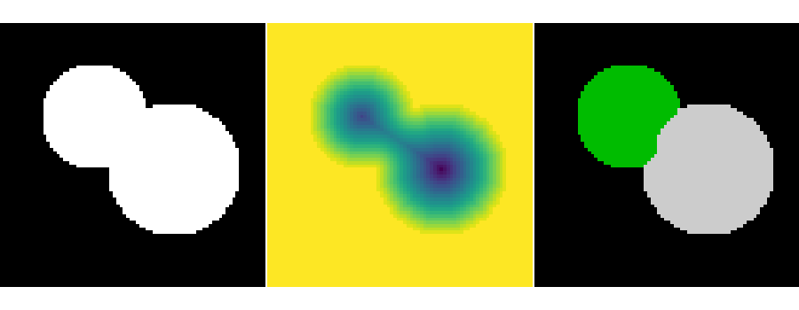

Note
Go to the end to download the full example code
2.6.8.22. Watershed segmentation¶
This example shows how to do segmentation with watershed.
import numpy as np
from skimage.segmentation import watershed
from skimage.feature import peak_local_max
import matplotlib.pyplot as plt
import scipy as sp
# Generate an initial image with two overlapping circles
x, y = np.indices((80, 80))
x1, y1, x2, y2 = 28, 28, 44, 52
r1, r2 = 16, 20
mask_circle1 = (x - x1) ** 2 + (y - y1) ** 2 < r1**2
mask_circle2 = (x - x2) ** 2 + (y - y2) ** 2 < r2**2
image = np.logical_or(mask_circle1, mask_circle2)
# Now we want to separate the two objects in image
# Generate the markers as local maxima of the distance
# to the background
distance = sp.ndimage.distance_transform_edt(image)
peak_idx = peak_local_max(distance, footprint=np.ones((3, 3)), labels=image)
peak_mask = np.zeros_like(distance, dtype=bool)
peak_mask[tuple(peak_idx.T)] = True
markers = sp.ndimage.label(peak_mask)[0]
labels = watershed(-distance, markers, mask=image)
plt.figure(figsize=(9, 3.5))
plt.subplot(131)
plt.imshow(image, cmap="gray", interpolation="nearest")
plt.axis("off")
plt.subplot(132)
plt.imshow(-distance, interpolation="nearest")
plt.axis("off")
plt.subplot(133)
plt.imshow(labels, cmap="nipy_spectral", interpolation="nearest")
plt.axis("off")
plt.subplots_adjust(hspace=0.01, wspace=0.01, top=1, bottom=0, left=0, right=1)
plt.show()
Total running time of the script: (0 minutes 0.057 seconds)